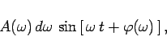
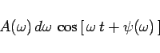
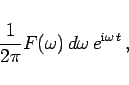
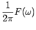
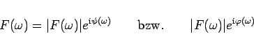
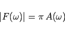
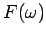
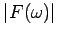
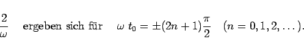

Inhalt Index DeskTop Bronstein

 Integraltransformationen Fourier-Transformation Eigenschaften der Fourier-Transformation Fourier-Transformation und Umkehrtransformation
Integraltransformationen Fourier-Transformation Eigenschaften der Fourier-Transformation Fourier-Transformation und Umkehrtransformation


In Analogie zur FOURIER-Reihe einer periodischen Funktion erfährt das FOURIER-Integral für eine nichtperiodische Funktion eine einfache physikalische Interpretation.
|  | (15.79a) |
|  | (15.79b) |
dargestellt werden.
|  | (15.80) |
wobei die Größe  sowohl die Amplitude als auch die Phase aller Teilvorgänge festlegt.
|  | (15.81a) |
nennt man Spektrum oder Frequenzspektrum der Funktion , die Größe
|  | (15.81b) |
das Amplitudenspektrum und bzw. das Phasenspektrum der Funktion . Zwischen dem Spektrum  und den Koeffizienten (15.66b,c) besteht die Beziehung
woraus sich die folgenden Aussagen ergeben:
| Beispiel |
|
Setzt man das Ergebnis (A.2) für den unipolaren Rechteckimpuls in (15.82) ein, dann ergibt sich für die Bildfunktion und für das Amplitudenspektrum  (s. Abbildung) 
|